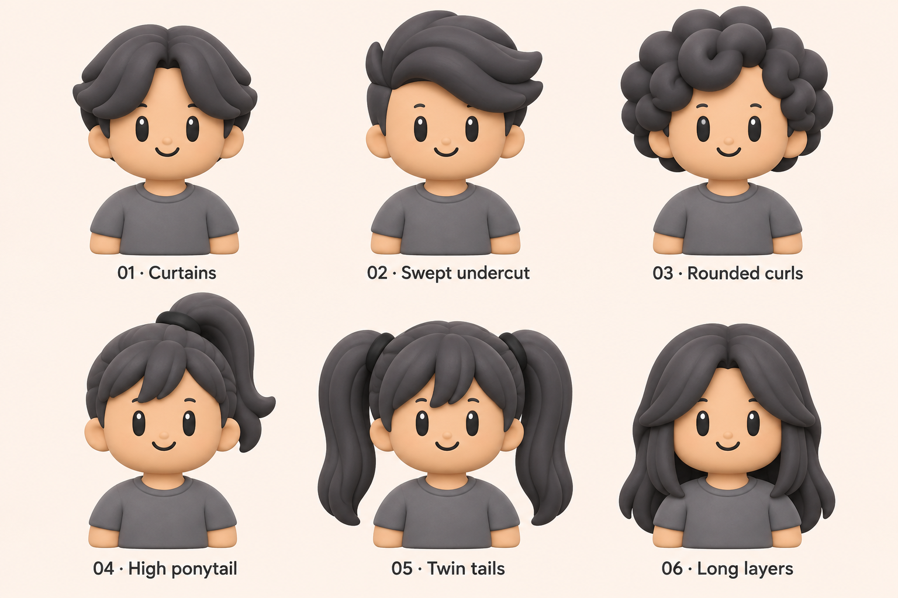

Hairstyle alternatives
Six new silhouettes in the existing soft 3D style. The face and charcoal hair color stay consistent for comparison.

Six new silhouettes in the existing soft 3D style. The face and charcoal hair color stay consistent for comparison.
